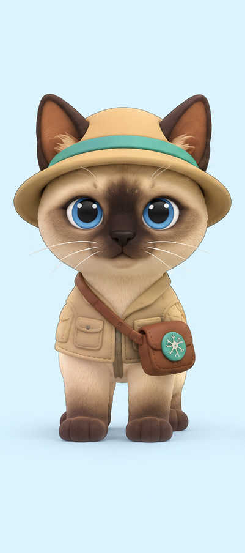
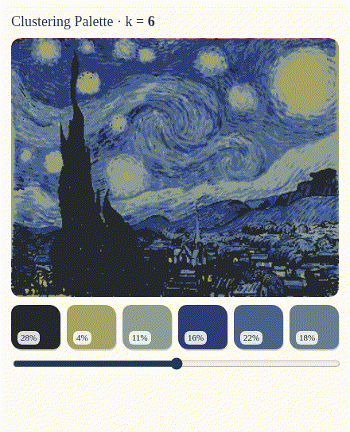
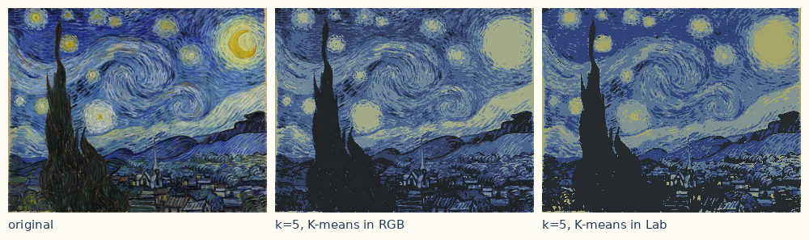

I built this little tool because I kept wondering what a machine actually “sees” when it looks at a painting. You give it a picture and a number k, and it sorts every pixel into k color groups. The first pass is K-means: each pixel has to pick exactly one group, and you get a simple palette with the share of the picture each color covers.
The second pass is a Gaussian mixture model, fitted with the EM algorithm. It is allowed to hedge — “this spot is 70% blue, 30% purple” — so you can see where the machine is unsure. Honestly, those fuzzy borders are the part I find most interesting, especially with kids: they open up the question of who gets to decide the colors, and whether the machine’s answer is the only one.


1. Pick a picture a few of my favorite paintings & old film stills — or bring your own
Your image is processed only in your browser — nothing is uploaded.
Original Tap any pixel
Recolored with the palette K-means
2. The palette K-means, hard clusters · % = share of the picture
Tap anywhere on the original picture to see how sure the AI is about that spot.
K-means makes every pixel pick exactly one color, but the Gaussian mixture (fitted with EM) gives probabilities instead, so a spot can be 70% blue and 30% purple. In the uncertainty map, the brighter areas are where the AI is less sure. And these groups aren’t the same as the colors people notice: big dark areas can take up several slots, while a small bright detail gets merged away. That fuzziness is what I like most, because it lets kids ask who should decide the colors on the border: the machine, the artist, or them.
About this project
Project overview
This is a small tool where an AI groups the colors of a picture with K-means, and then uses EM (a Gaussian mixture) to show where a pixel only partly belongs to a group. I made it because I wanted kids to actually see how an AI “decides” colors, and that it isn’t always sure.
Challenges & how I solved them
My first try in RGB gave muddy colors, so I moved to Lab color space, which is closer to how we see. Clustering every pixel was too slow for a live slider, so now I sample about 6,000 pixels. And I really wanted to show the machine’s doubt, so I added the soft-clustering view with the uncertainty map.

What happened with kids
[To add: what I saw when kids used this: which questions it sparked, what surprised them.]